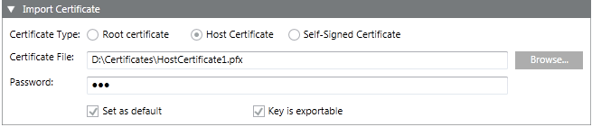

Import a Certificate in the Windows Store
WARNING

You should only import certificates obtained from trusted sources. Importing an unreliable certificate could compromise the security of any system component that uses the imported certificate.
- In the SMC tree, select Certificate.
- Click Import Certificate .
- In the Import Certificate expander, do the following:
a. Select the Certificate type, either Root certificate or Self-signed certificate, to change the default selection Host certificate.
b. Click Browse and select the certificate file. Import the appropriate certificate for the selected Certificate type.
To import the host certificate, you must import the .pfx file of the host certificate.
To import the root certificate, you must import the .cer file of the root .pfx certificate.
To import the self-signed certificate, you must import the .pfx file of the self-signed certificate.
c. Enter the password for the host or self-signed certificate.
d. (Optional) Clear the Set as default check box, if you do not want to set the selected certificate as default. By default, it is selected, if the selected certificate type is not already set as default.
e. (Optional and available only for Host and Self-Signed Certificates) Clear the Key is exportable check box if you do not want to back up or transport your keys at a later time.
NOTE: The key of the certificate used while creating a web application and Client or Server communication (host certificate) must be exportable. - Click Save
 .
.
NOTE 1: It is recommended to create a new certificate if the machine name is changed, each machine name must have a unique certificate, you can import and set the certificates as default.
NOTE 2: Only certificates with RSA signature algorithm are supported. CNG certificates are not supported. - A message displays if the host certificate you are about to import has the same Subject name as that of its root certificate. It is recommended to select a valid host certificate.
- Click OK to import or click Cancel to cancel the dialog box and select another certificate.
- The selected certificate is imported successfully in the certificate store.
The Certificate Type - Root Certificate is imported in Local machine Certificates and User Certificates > Trusted Root Certificate Authorities.
The Certificate Type - Host Certificate is imported in Local machine certificates > Personal.
The Certificate Type - Self-Signed Certificate is imported in Local machine certificates and User Certificates > Trusted Root Certificate Authorities, and in the store Local machine certificates > Personal.
